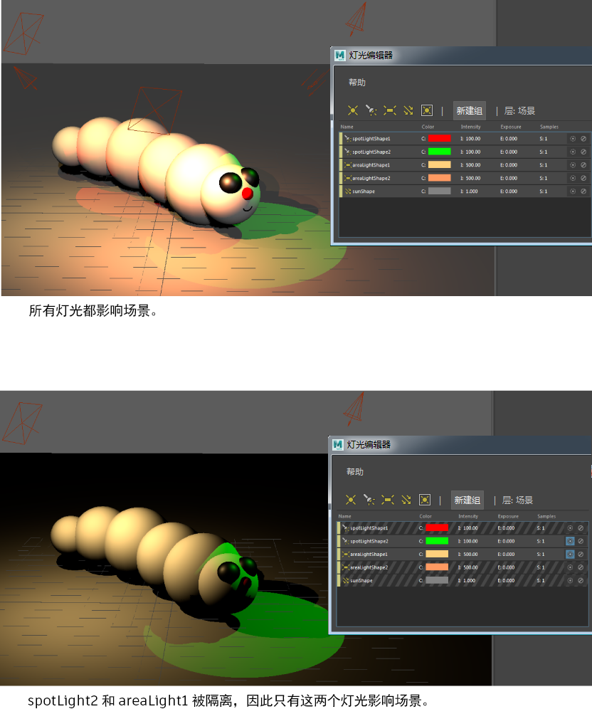

使用灯光编辑器隔离灯光子集，以便只有这些灯光在场景中生效。
切换隔离图标。 表示“隔离选择”(Isolate Select)处于启用状态，而
表示“隔离选择”(Isolate Select)处于启用状态，而  表示“隔离选择”(Isolate Select)处于禁用状态。
表示“隔离选择”(Isolate Select)处于禁用状态。
隔离灯光时，仅该灯光会影响场景。所有其他灯光均不会影响场景，并在“灯光编辑器”(Light Editor)中显示有对角线图案。您可以隔离多个灯光。为方便起见，您还可以隔离灯光组。

使用灯光编辑器隔离灯光子集，以便只有这些灯光在场景中生效。
切换隔离图标。 表示“隔离选择”(Isolate Select)处于启用状态，而 表示“隔离选择”(Isolate Select)处于禁用状态。
隔离灯光时，仅该灯光会影响场景。所有其他灯光均不会影响场景，并在“灯光编辑器”(Light Editor)中显示有对角线图案。您可以隔离多个灯光。为方便起见，您还可以隔离灯光组。